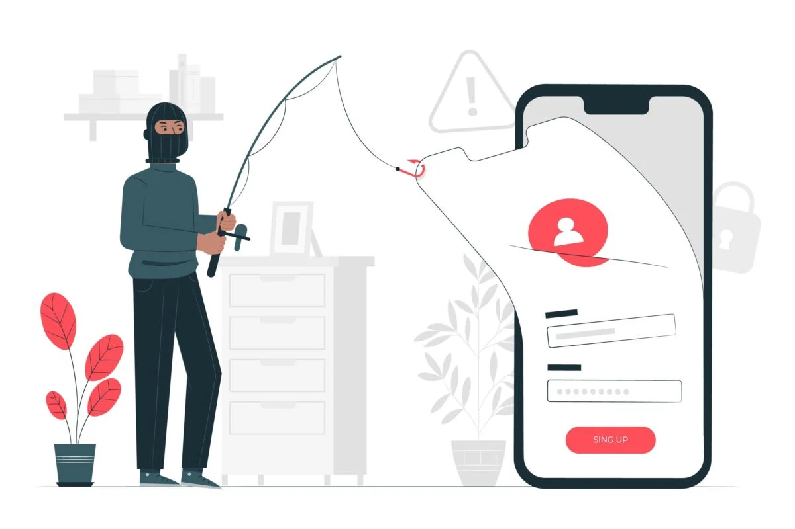

.
INTRODUZIONE
cyber-crimini
partiamo da questo presupposto.
l'ignoranza non è innocenza.

copyright
quando qualcuno crea qualcosa acquisisce automaticamente il diritto d'autore sul suo creato.
l'infrazione di copyright è quindi l'uso di contenuti soggetti a diritti d'autore a scopo di lucro, e senza il consenso dell'autore.
diffamazione
il diritto di critica finisce quando si offende la reputazione altrui, soprattutto in sua assenza, soprattuto sui social. si possono criticare le pubbliche attività online, finche non si fanno assunzioni false e/o irrilevanti su una persona.
animus offendi nei casi di diffamazione, l'intenzione non conta.

sostituzione di persona
spacciarsi per un'altra persona, per scopi di diffamazione, o più spesso rubare carte di credito o altri metodi di pagamento. premi qui per maggiori informazioni.
hate speech
quando gruppi organizzati o singoli vanno contro un'individuo o un gruppo con lo scopo di umiliare, disumanizzare, istigare al disprezzo, la discriminazione e alla violenza fisica.
cyberstalking
appunto stalking online, atti persecutori effettuati attraverso servizi digitali, tipicamente da parte di ex partner, corteggiatori pretendenti e predatori. la pena è aggravata rispetto allo stalking ordinario, dalla invasività dei dispositivi elettronici
revenge porn
la diffusione di immagini o video sessualmente espliciti senza il consenso della persona ritratta, spesso con scopo di recare danno all'interessato. un consiglio: tenere sempre la faccia fuori dai contenuti sessualmente espliciti.

pedopornografia
la rappresentazione tramite qualsiasi mezzo di contenuti esplici che involvono un minore. è facilmente il crimine peggiore della lista.